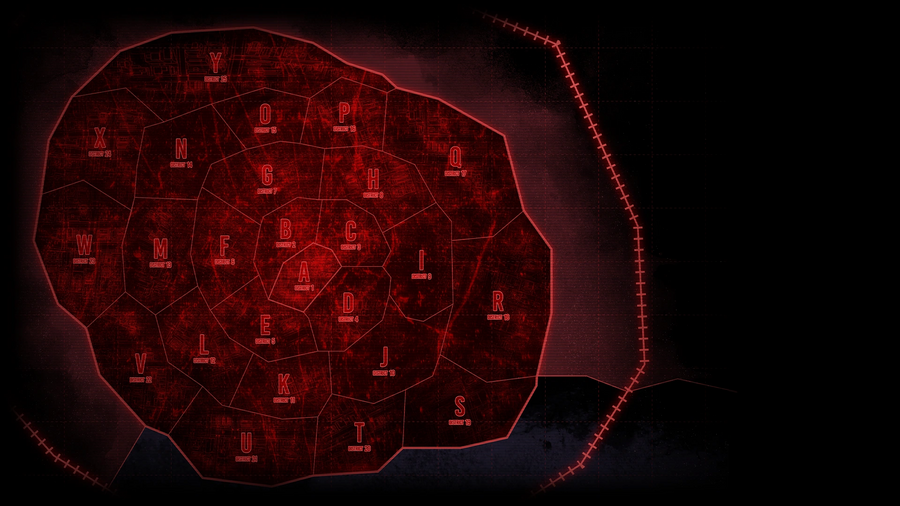

都市与巢
我们生活在这被划分为26个区的巨大都市之中。每个区的核心区域被称作“巢”。管辖巢的巨型企业会为巢中的居民提供庇护，如同鸟儿在巢中孵蛋一般。
当然，阴影总是与光芒相生相伴：在巢之外……后巷里的居民可得不到庇护。
翼
此处的翼并非是在指代鸟类的生理结构。
不过，翼与护巢母鸟并无二致，不可否认两者之间有所关联。
翼是都市之中掌管巢的26个超大型企业的统称。众所周知，各片翼都依托于被称作“奇点”的惊人技术来改善都市各处的生活质量，为巢谋求安宁。
然而，一旦翼被折断，情况便会天翻地覆。每当都市之中有翼被折断时，便会带来影响甚重的事件，无一例外。
诚然，已折旧翼处迟早会重新长出一片新翼。但直到新翼成熟之前，失去庇护的巢……只得自求多福。

后巷
跟巢不同，后巷是不能保证您的安全的危险区域。
（即使是巢也自有其危险伴随。）后巷在各巢内纵横、蔓延、环绕其间，犹如血管般遍布整个都市，虽然两者的边界泾渭分明。
可能一眼看去这些区域像是无法之地，其实每个区的后巷拥有其独特的禁忌，您可以在此发现丰富多样的文化。
有时，由都市居民形成的不同规模和领域的各类组织，可以统称为帮派。

E.G.O
从异想体身上提取武器与护甲的技术。推测这是通过使用一种能够将异想体的内在以物质形式呈现的技术创造的。
脑啡肽
指脑叶公司所生产的能源。
通常认为会被用来产生电能，但并不一定只限于这种使用方式。
该物质常态下为绿色液体，已知吸入时会产生极度强烈的安逸感。为了提高业务效率，前L公司也会开出适当的处方给予压力过大的员工。
但是，过量服用或是暴露于尚未精炼的脑啡肽前时……
貌似并不会招来较好的结果。
收尾人
处理都市中各类数不清的事件委托，并将其作为职业的人们被称作“收尾人”。
当然，自称的收尾人可不算收尾人，必须得先前往协会认可的事务所或直接访问协会取得收尾人执照才行。
此外，手握执照仅是收尾人生涯的开始。为了成为高阶收尾人这些人必须努力积累实绩。(当然，也有人对升阶毫无兴趣。)
虽然这些人的存在是为了处理都市中的问题，但众所周知的是，偶尔他们自己也会成为一个问题。
协会与事务所
以总辖都市中所有收尾人的하나协会为主轴，管理收尾人的巨大团体被称作协会。一般在都市中发生的事件会根据各个协会的特性进行适配，再由协会将任务分配给收尾人。
事务所虽然在作为收尾人集会的方面上与协会类似，但是其规模较小。有些事务所会被直属的协会下派任务，而有些事务所则会自行寻找任务。
就像某人所说的“有多少收尾人，就有多少事务所”，都市中有着多到数不清的事务所，但往往都是昙花一现。